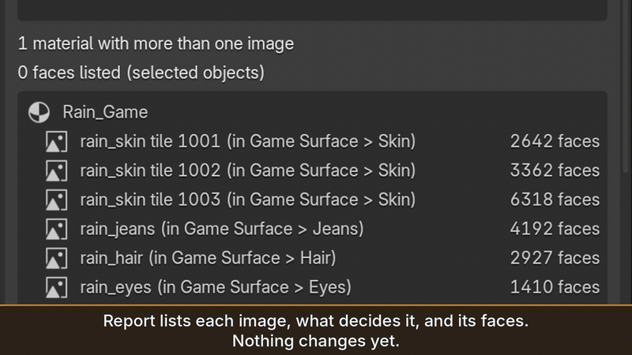
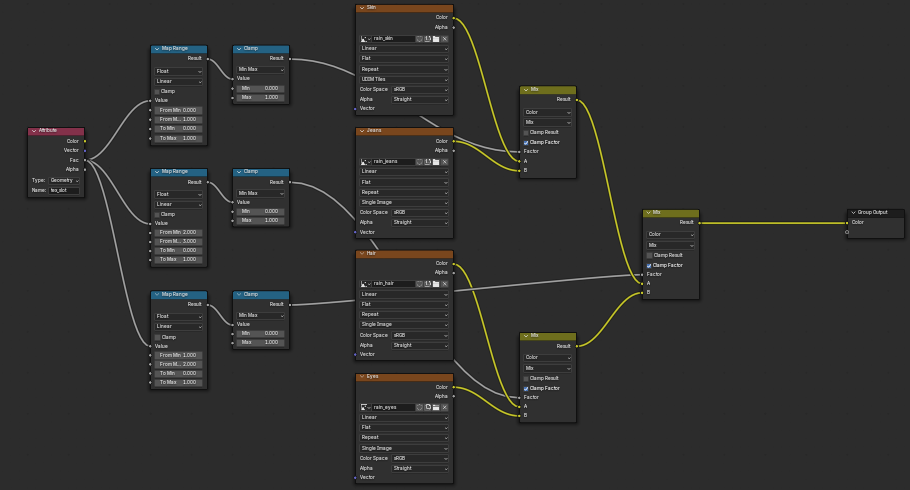
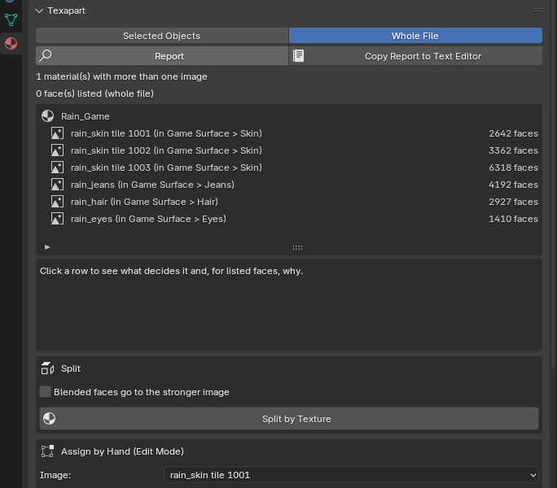
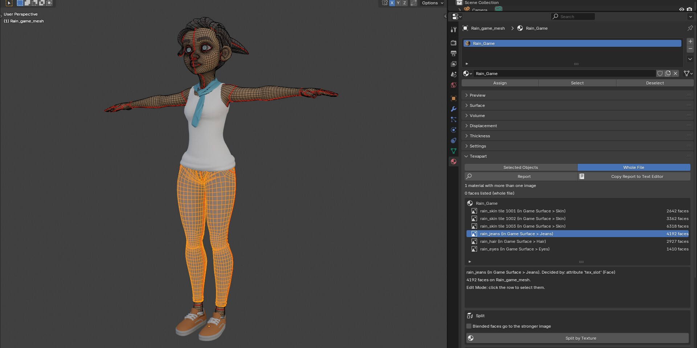
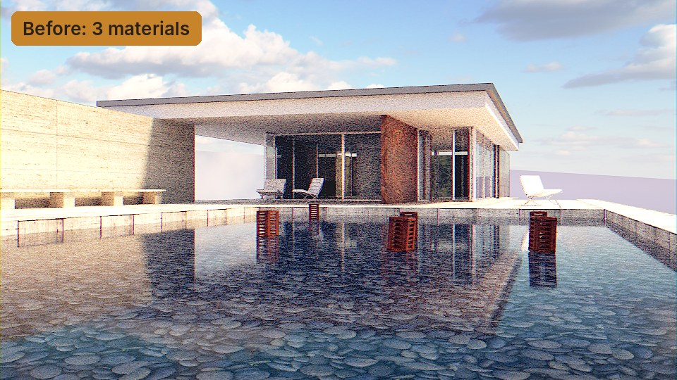
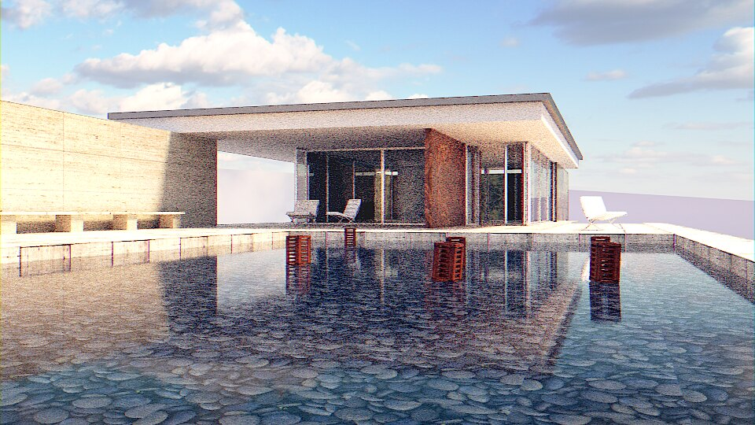

Texapart for Blender
Your game's shaders only accept one texture per material, and this material has multiple textures in it? Texapart splits it into one material per texture, and each face keeps the image it showed in Blender.

Real Blender 4.2.23, Texapart 1.0.4, 35 s, no sound: Rain, packed as a game port ships her, split into six one-image materials. Whole window · Credits
$10 once, source included. Buy for $10
- One material per texture, for shaders that take only one.
- Each face keeps its image, or is listed with the reason.
- See it first, undo in one step. Your original material stays in the file.
$10, one-time, source included (GPL-3.0-or-later). Every update included.
Blender 4.2 LTS to 5.3, tested on 4.2.23, 4.5.16, 5.2.4 and 5.3.0 (Linux) · support@ochrestack.com · Polar checkout · 14-day refund · no license check · details
Watch

In Blender, for real
Every image here is a capture of a real Blender 4.2 window with Texapart 1.0.4 installed from its zip, except the two Cycles renders of the Pavilion below. Rain's skin, jeans, hair and eye images are in one material, as a game port delivers her. In Blender the Texapart panel is in the Material tab of the Properties editor, below Blender's own Surface and Settings panels.

tex_slot, picks one of four images for each face; her skin image has three UDIM tiles.



A building, not only a character: the Barcelona Pavilion, rebuilt the way an importer delivers it, with three materials that each mix two to four images.



What it does
- Report finds every material whose colour comes from more than one image, also inside node groups, and what decides each: an attribute, a UV map or a UDIM tile.
- Split by Texture makes one material per image, shared by every object (an image used two ways, such as at two scales, gets one per way). A second run does nothing and says so.
- Move Selected Faces places the faces the report lists, such as a blend or a mask. Then export with Blender's own FBX or glTF exporter.
Details
- Buying: secure checkout by Polar; the download arrives by email after payment; the zip holds the full source. If it doesn't work as described and we can't fix it within a reasonable time, email us within 14 days of purchase for a full refund (terms). Questions first, or buying for a team? support@ochrestack.com.
- Windows and macOS have not been tested, and neither has Unity or Unreal; Godot 4.7 was. Works with Blender 4.2 LTS to 5.3.
- GPL-3.0-or-later. No telemetry, no analytics, no network calls of any kind.
- Not covered: images mixed by a painted mask, images combined with a blend mode such as Add, procedural textures and anything else that varies inside one face are listed, not split. Normal and roughness maps are not carried; the report names them before you split. No baking or atlases.
Install and first split: Texapart quick start.
Rain, a building, scenes built to break it and 136 tests on four Blender versions: how we tested.
Character: Rain Rig (CC) Blender Foundation | studio.blender.org, CC BY 4.0. We packed her four images into one material and joined her body, head, jeans, hair and eyes into one mesh. Rain is not included with Texapart. Test building: "Barcelona Pavilion" by eMirage (Hamza Cheggour; base model and textures by Claudio Andres), CC-BY, from blender.org's demo files; architecture by Ludwig Mies van der Rohe.
$10 once, source included · Polar checkout · 14-day refund · Blender 4.2 LTS to 5.3, tested on 4.2.23, 4.5.16, 5.2.4 and 5.3.0 (Linux)